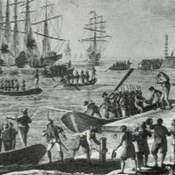

Isusovački blaženici
Isusovac · Svećenik · Mučenik
Bl. Ivan Nikola Cordier
1710.–1794.
Francuski profesor i kapelan u dubokoj je starosti zatočen radi deportacije te umro nakon neljudskih uvjeta na brodu za zatvorene svećenike kod Rocheforta.
Tekst je preveden i prilagođen uz pomoć umjetne inteligencije.

Izvor slike
- Spomendan
- 30. rujna
- Zaštitništvo
- Nije navedeno u izvoru
- Životni vijek
- 1710.–1794.
- Djelovanje
- Obrazovanje i poučavanje vjere · Progoni i progonstvo · Mučeništvo
- Razdoblje
- 18. stoljeće
- Ulazak u Družbu
- 1728.
- Uhićenje
- 28. listopada 1793.
- Smrt
- 30. rujna 1794.
U kalendaru zbirke koristi se dan smrti. Taj datum nije zasebna potvrda liturgijskoga spomendana.
Životopis
Ivan Nikola Cordier rođen je 1710. u Souillyju u Loreni. Družbi Isusovoj pristupio je 1728. Nakon studija poučavao je u Dijonu, Auxerreu i Autunu. Stekao je doktorat, predavao filozofiju u Strasbourgu i teologiju u Pont-à-Moussonu te bio prefekt studija i poglavar u Saint-Mihielu. Nakon ukidanja Družbe ostao je ondje kao kapelan redovnica.
Poslije ukidanja redovničkih zajednica 1790. utočište je našao u Verdunu. Uhićen je 28. listopada 1793. i određen za deportaciju. Nakon više mjeseci zatvora dopremljen je u Rochefort te 19. lipnja 1794. ukrcan na nekadašnji robovlasnički brod Washington. Brod nije otplovio, a zatočenici su ostali izloženi prenapučenosti, oskudici i bolestima.
Dokumentarna zbirka Henrija Leclercqa prenosi izričito svjedočanstvo o Cordieru: zapovjednik mu nije dopuštao rezervnu košulju ni rupčić, a oduzeo mu je i štap kojim se pomagao pri hodu. Te pojedinosti upotpunjuju opću sliku brodskoga zatočeništva. Kada je obolio, premješten je u improviziranu bolnicu na otoku. Umro je 30. rujna 1794. i pokopan među drugim zatočenicima. S ostalim svećenicima žrtvama rochefortskih brodova proglašen je blaženim 1995. za pontifikata Ivana Pavla II.
Tekst je preveden i prilagođen uz pomoć umjetne inteligencije.
Pročitaj više na izvornoj stranici ↗